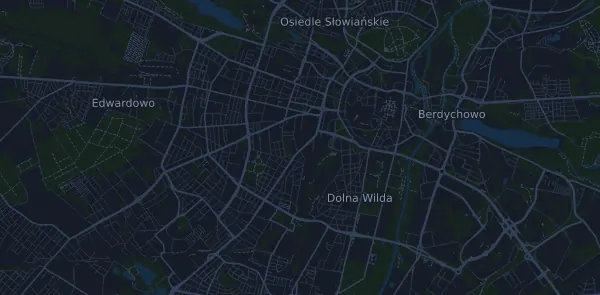

LOTTO 25. Poznań Maraton im. Macieja Frankiewicza 42,3 km
- Distans
- 42,3 km
- Höjdmeter
- ↑ 178 m
- Högsta punkt
- 91 m ö.h.
- Underlag
- Väg
- Karaktär
- Flack
Höjdprofil
Förbered dig med Mila
Mila är en löpcoach i appen. Lägger du till ett lopp i din plan planerar coachen veckorna fram till start efter din form, och ger dig en tidsprognos och en plan för tempo, vätska och energi på banan.

Rätt pass. Rätt dag.
Banan

Om banan
Poznań Maraton är en snabb och nästan platt bana: 42,33 km med 178 höjdmeter upp och 176 ned, allt mellan 50 och 91 m ö.h. De första fyra kilometerna går svagt nedför, från 86 till runt 68 meter. Vid km 9,3 kommer en lång, knappt märkbar stigning på 26 m över drygt fem kilometer (0,5 %). Banans lägsta punkt ligger runt halvvägs, och från km 20 klättrar du 28 m över närmare sju kilometer (0,4 %) upp till km 27. Sista tredjedelen ligger högre och böljar lätt kring 83–88 meter ända in i mål.
Banan kräver framför allt jämnt tempo och marathonuthållighet, inte backstyrka. Det lätta utförslutet i starten lockar till för hög fart, och den långa stigningen efter halvvägs straffar den som redan har tagit i för mycket. Bygg långpass på plan, troligen asfalterad mark, och lägg in längre partier i tänkt maratontempo mot slutet. Öva på att hålla jämn ansträngning när det lutar svagt uppför. Träna också energi och dryck under långpassen så att magen klarar loppdagen.
Beskrivningen är skriven av Milas coach utifrån banans data.
Klättringar
| Börjar vid | Längd | Höjdmeter | Lutning | Topp (m ö.h.) |
|---|---|---|---|---|
| km 9,3 | 5,1 km | 26 m | 0,5 % | 84 |
| km 20,0 | 6,7 km | 28 m | 0,4 % | 86 |
Tempotabell
LOTTO 25. Poznań Maraton im. Macieja Frankiewicza 42,3 km på 3:00:00 – tid per km och mellantider
4:15 per km · km 10: 42:31 · km 21,1: 1:29:43 · km 30: 2:07:34 · km 40: 2:50:06 · mål: 3:00:00
LOTTO 25. Poznań Maraton im. Macieja Frankiewicza 42,3 km på 3:30:00 – tid per km och mellantider
4:58 per km · km 10: 49:37 · km 21,1: 1:44:41 · km 30: 2:28:50 · km 40: 3:18:26 · mål: 3:30:00
LOTTO 25. Poznań Maraton im. Macieja Frankiewicza 42,3 km på 4:00:00 – tid per km och mellantider
5:40 per km · km 10: 56:42 · km 21,1: 1:59:38 · km 30: 2:50:06 · km 40: 3:46:47 · mål: 4:00:00
LOTTO 25. Poznań Maraton im. Macieja Frankiewicza 42,3 km på 4:30:00 – tid per km och mellantider
6:23 per km · km 10: 1:03:47 · km 21,1: 2:14:35 · km 30: 3:11:21 · km 40: 4:15:08 · mål: 4:30:00
Tiderna förutsätter jämnt tempo hela vägen. Det är ren räkning, ingen prognos: i backar, i trängsel och vid vätskekontroller varierar tempot.
Vanliga frågor
När går LOTTO 25. Poznań Maraton im. Macieja Frankiewicza 42,3 km?
Datum för nästa upplaga är inte klart än. Senast gick loppet 4 oktober 2026.
Hur lång är LOTTO 25. Poznań Maraton im. Macieja Frankiewicza 42,3 km och hur många höjdmeter är det?
Loppet är 42,3 km långt med 178 höjdmeter uppför och 176 nedför. Högsta punkten ligger 91 m ö.h.
Hur ser banan på LOTTO 25. Poznań Maraton im. Macieja Frankiewicza 42,3 km ut?
Banan räknas som flack, med 4,2 höjdmeter per km i snitt. Den har 2 klättringar på minst 25 höjdmeter; den största börjar vid km 20,0: 28 höjdmeter på 6,7 km. Start och mål ligger på samma plats. Underlaget är väg.
Hur lägger jag upp farten på LOTTO 25. Poznań Maraton im. Macieja Frankiewicza 42,3 km?
Sikta på en jämn ansträngning hela vägen, och håll igen de första kilometrarna när benen känns pigga och fältet drar iväg. Banan är flack, så ett jämnt tempo per kilometer fungerar bra. I Mila får du en tempoplan för just den här banan efter din egen form.
Fler lopp som det här
Fler lopp i närheten
- Bieg Rzeźnika 80 km28 maj 2027 · Komańcza, Polen
- Cracovia Maraton 42,2 km18 april 2027 · Kraków, Polen
- Półmaraton Warszawski 21 km4 april 2027 · Warszawa, Polen
- Łemkowyna Trail 150 (Łemkowyna Ultra-Trail®) 149,2 km17 oktober 2026 · Krynica-Zdrój, Polen
Förbered dig med Mila
Rätt pass. Rätt dag.
Uppgifterna kommer ur banfilen och arrangörens information. Kontrollera datum, starttider och regler hos arrangören.
Mila är inte kopplad till, sponsrad av eller godkänd av arrangören eller loppets sponsorer. Namn och varumärken tillhör sina ägare. Arrangör eller rättighetsinnehavare? Begär ändring eller borttagning